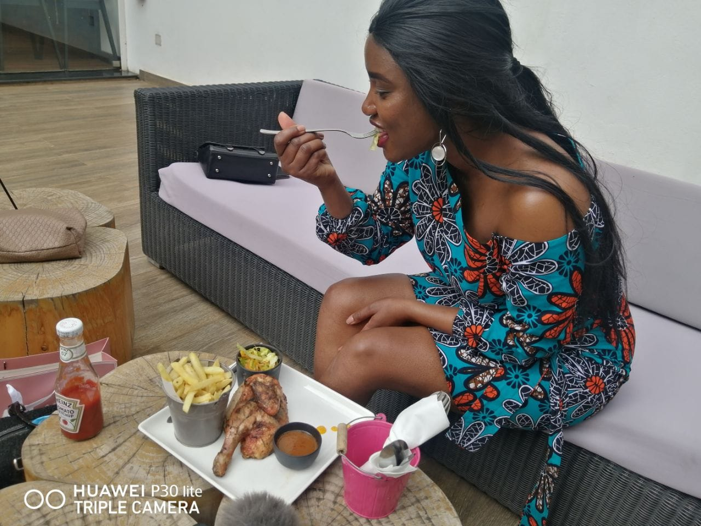

What you need to know:
For more than four years, she has grown to become one of the most successful
network marketers in Kenya.
read the story as written by Collins Kariuki on daily nation
https://nation.africa/kenya/life-and-style/mynetwork/i-m-here-to-turn-job-seekers-
into-job-and-wealth-creators-279974

Network marketers don’t just focus on financial growth, but on all aspects
of human interaction and wealth creation.
I have since adopted a positive attitude on all aspects of my life.
I have also created a huge network while coaching young people on become
financially independent.
My greatest satisfaction is to see my mentees recognise and appreciate
my role in their own success.
For a long time, many Kenyans have associated network marketing – a business
model that relies on person-to- person selling – with fraud, largely due to
misinformation.
Advertisement
However, Caroline Mwende has transformed her life through that same business
model.
For more than four years, she has grown to become one of the most successful
network marketers in Kenya.
What is network marketing?
This is a business model where individuals earn commissions for making
referrals or bringing in new clients into a business. For example, if you refer someone to
a salon you have been to and the salon’s owner pays you, you are
a network marketer.

What were you doing before you joined this field?
I was working for an NGO based in Machakos County and I loved my job, but I had
to put in very long hours with little pay. It is while working there that I
switched to network marketing.
What motivated you to join the industry?
I consider myself a risk taker, and that is part of the reason I decided to try
it out. My family and friends really discouraged me because they believed that network marketing is not genuine work. However,
I conducted my research and got started in spite of the dissenting voices.
How can one identify a legitimate network marketing business?
Most people fall for pyramid schemes because of the online hype. Genuine
companies are often long term business entities that are properly registered,
provide quality products or services, are tax compliant and have a well outlined
compensation plan and methods of payment. Additionally, they have open
communication lines through which complaints can be channelled, and physical
addresses too. Pyramid schemes, on the other hand, are short term businesses that
hardly ever last more than six months.
How has this field changed over the last four years? What challenges
have you faced?
Network marketers don’t just focus on financial growth, but on all aspects of
human interaction and wealth creation. I have since adopted a positive attitude
on all aspects of my life. I have also created a huge network while coaching
young people on become financially independent. My greatest satisfaction is to
see my mentees recognise and appreciate my role in their own success.
The biggest challenge I have faced is rejection. Some friends, family and even
strangers don’t take my job seriously because they don’t understand it.
What makes a network marketer successful? Can anyone do it?
Anyone can be successful in network marketing as long as they work hard and make
a few sacrifices especially during the initial phase. They should also be willing
to help others grow.
do you usually spend your work days?
I am an early riser. I wake up at 5am every day, then I listen to motivational
talks or podcasts about network marketing and business success before heading to
work. From 8am to 7pm, I sit in my office coaching my team, and connecting with new
business associates online.
motivates you to keep going?
The picture of the life I want for myself and the future generations. I grew
up poor, and I feel like it is my responsibility to change that. I wouldn’t want
my children to grow up that way. I also want to help others realise their dreams.
What do you hope to achieve in the next few years?
I am here to help job seekers become job creators. I want to create a huge
movement of Kenyan youth who don’t need to be employed because they are growing
their income through business.
What do you do to unwind?
I create time to meet new people, make new friends and have fun. I regularly do
charity work with my friends, and I enjoy reading, hiking and travelling.
Sometimes I stay indoors, watch a movie, or listen to music.
Your advice to aspiring network marketers?
Go for it. Choose a company that has the products or services that you like,
then get a mentor and be ready to endure the initial challenges as you work
towards success. Be a good student who is patient, hardworking and consistent.
Moreen Opati
WhatsApp +254 746 783389
Your Partner in Success